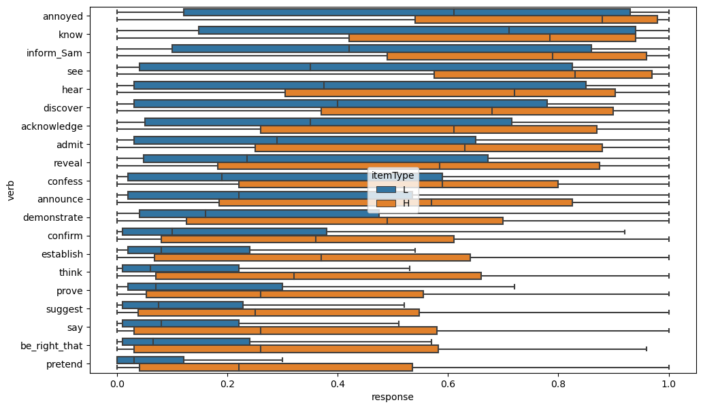

Download the data
!git clone https://github.com/judith-tonhauser/projective-probability.git data/projective-probability/
data_dir = "data/"We’ll address the question of what it means for the projective inferences associated with some class of predicates to be “weaker” by considering two possibilities. The first is that variability in the likelihoods of projective inferences associated with each class indicates that elements of each class share a representation that is fundamentally gradient in nature. For instance, one way to implement this idea is to model projective inferences as analogous to the sort of vagueness one sees in predicates like tall–e.g. assuming that each class has a different projectivity threshold. I’ll refer to this hypothesis as the fundamental gradience hypothesis.
An alternative idea, following the discussion of Degen and Tonhauser (2022), is to assume that these likelihoods indicate the probability with which one chooses a factive v. non-factive variant of a predicate.1 I’ll refer to this hypothesis as the indeterminacy hypothesis.
We investigate this question by looking at the data collected by Degen and Tonhauser (2021). This dataset is useful for us because–not only does it contain judgments relevant to projectivity–it also explicitly measures how likely the content of the complement of a particular verb is. Degen and Tonhauser (2021) use these data to demonstrate that inference judgments in projectivity experiments using the paradigm discussed by Degen and Tonhauser (2022) are modulated by this likelihood–which Degen and Tonhauser (2021) discuss as a measure of subjects’ prior beliefs.
!git clone https://github.com/judith-tonhauser/projective-probability.git data/projective-probability/
data_dir = "data/"Our question will be: how does this modulation of inference judgments in the projectivity experiments occur? The first thing to ask is how knowledge about a predicate’s projectivity \(\pi^\text{verb}_v\) might be combined with prior knowledge about likelihood of some propositional contents in some context \(\pi^\text{context}_c\). We will consider a very simple general form for this combination: probabilistic fuzzy logic disjunction.
To see why this form is useful for our purposes, let’s consider an informal description of how a proponent of the indeterminacy theory might describe what happens when someone makes an inference judgment in the projectivity experiments: decide, on the basis of prior knowledge about how frequently the factive variant of a predicate occurs, whether to select a factive or non-factive variant of the predicate; if you selected a factive variant, respond yes; otherwise, respond based on your prior beliefs about the contents.
In the case where the response is based on prior beliefs, there are two ways one might go. The first is to decide whether the content is true and, if it is responde yes; and if it isn’t, respond no. I will refer to this as the wholly discrete hypothesis because all responses are at least intended to be no or yes (though they may be obcured by noise, response biases, etc.). If \(\tau^\text{verb}_n \sim \text{Bernoulli}\left(\pi^\text{verb}_{\text{verb}(n)}\right)\) is the decision about whether or not the verb is factive and \(\tau^\text{context}_n \sim \text{Bernoulli}\left(\pi^\text{context}_{\text{context}(n)}\right)\) is the decision about whether the content is true in the relevant context, then we can describe the intended response \(n\) (again, up to noise) as \(\tau^\text{verb}_n \lor (\tau^\text{verb}_n \rightarrow \tau^\text{context}_n) = \tau^\text{verb}_n \lor \tau^\text{context}_n\). I will refer to this first hypothesis as the wholly discrete model.
The second option is to assume that one decides whether or not the verb is factive \(\tau^\text{verb}_n \sim \text{Bernoulli}\left(\pi^\text{verb}_{\text{verb}(n)}\right)\), but that if it’s not we respond with the raw likelihood \(\pi^\text{context}_c\) (again, potentially subject to noise). We can describe this as \(\tau^\text{verb}_n \lor \pi^\text{context}_n\), assuming that \(\lor\) is interpreted as probabilistic fuzzy logic disjunction: \(p \lor p' \equiv = p + (1-p)p' = 1 - (1-p)(1-p')\), where classical disjunction is a special case with \(p, p' \in \{0, 1\}\).2 So then:
\[\tau^\text{verb}_n \lor \pi^\text{context}_n = \begin{cases} 1 & \text{if } \tau^\text{verb}_n = 1\\ \pi^\text{context}_n & \text{otherwise} \end{cases}\]
I will refer to this second hypothesis as the verb discrete model.
The setup above suggests two additional possibilities: responding based on \(\pi^\text{verb}_n \lor \tau^\text{context}_n\) or responding based on \(\pi^\text{verb}_n \lor \pi^\text{context}_n\). The first of these options–which I will refer to as the context discrete model is a logical possibility, but it is not clear what kind of theory it might be associated with. Nonetheless, it assumes that responses are based directly on gradient knowledge about the verb. The second of these options–which I will refer to as the wholly gradient model–is a more natural fit for an implementation of the fundamental gradience hypothesis: it seems that at least the use of prior knowledge would be gradient; the question is whether is use of the lexical knowledge is as well.
The use we are going to put the norming data collected by Degen and Tonhauser (2021) is the estimation of distributions representing prior beliefs about particular contexts. That is, we will use it to estimate a distribution on \(\pi^\text{context}_c\).
import os
from pandas import DataFrame, read_csv
def load_norming_data(fname: str) -> DataFrame:
data = read_csv(fname, index_col=0)
data = data[~data.item.isin(["F1", "F2"])]
return data.drop(columns="comments")
data_norming = load_norming_data(
os.path.join(
data_dir,
"projective-probability/results/1-prior/data/cd.csv"
)
)Our main focus in this dataset will be modeling the distribution of respones to each itemType + itemNr, which corresponds to a particular pairing of fact and prompt. I’ll refer to these together as the context.
data_norming[["workerid", "itemType", "itemNr", "prompt", "fact", "response"]].head()| workerid | itemType | itemNr | prompt | fact | response | |
|---|---|---|---|---|---|---|
| 1 | 0 | H | 12 | How likely is it that Frank got a cat? | Frank has always wanted a pet. | 0.83 |
| 2 | 0 | L | 7 | How likely is it that Isabella ate a steak on ... | Isabella is a vegetarian. | 0.14 |
| 3 | 0 | H | 10 | How likely is it that Zoe calculated the tip? | Zoe is a math major. | 0.93 |
| 5 | 0 | L | 3 | How likely is it that Emma studied on Saturday... | Emma is in first grade. | 0.64 |
| 6 | 0 | L | 13 | How likely is it that Jackson ran 10 miles? | Jackson is obese. | 0.25 |
Each prompt is paired with two different facts: one for which the prompt should elicit higher likelihood responses (itemType=H) and another for which the prompt should elicit lower likelihood responses (itemType=L). One example can be seen below.
data_norming_sub = data_norming.query('item.isin(["10H", "10L"])')from seaborn import histplot
p = histplot(
data=data_norming_sub, x="response", hue="fact",
hue_order=["Zoe is 5 years old.", "Zoe is a math major."]
)
_ = p.set_title("How likely is it that Zoe calculated the tip?")
In general, the intended likelihood corresponds quite well to the distribution of responses.
from matplotlib.pyplot import subplots
from seaborn import boxplot
fig, ax = subplots(figsize=(11.5, 7))
prompt_order = data_norming.groupby("prompt").response.max().sort_values(ascending=False)
_ = boxplot(data_norming, y="prompt", x="response", hue="itemType", hue_order=["L", "H"], order=prompt_order.index)
Before discussing the prior belief model, we need to consider how exactly to model these sorts of bounded scale responses.
A common way to model bounded scale responses is to assume that responses \(Y_n\) are distributed beta with mean \(\mu_{\text{item}(n)} \in (0, 1)\) and sample size \(\nu \in \mathbb{R}_+\):
\[Y_n \sim \text{Beta}(\nu\mu_{\text{item}(n)}, \nu(1-\mu_{\text{item}(n)}))\]
This parameterization–in contrast to the parameterization directly in terms of \(\alpha\) and \(\beta\) that we discussed here–allows us to more directly model the expected value of \(Y_n\), since:
\[\mathbb{E}[Y_n] = \frac{\nu\mu_{\text{item}(n)}}{\nu\mu_{\text{item}(n)} + \nu(1-\mu_{\text{item}(n)})} = \mu_{\text{item}(n)}\]
This ability to more directly model the expected value–rather than having to model the two parameters \(\alpha\) and \(\beta\) directly–is useful for interpretability.
One challenge that arises with making this assumption is that the beta distribution does not have support on 0 or 1. This challenge is a real one, since there are a small (but nontrivial) number of 0 and 1 responses in the norming data (as well as the projection data).
from seaborn import countplot
def bin_responses(response):
if response == 1:
return "one"
elif response == 0:
return "zero"
else:
return "neither"
data_norming["responsetype"] = data_norming.response.map(bin_responses)
_ = countplot(x = "responsetype", data = data_norming, order = ["zero", "neither", "one"])One way that researchers deal with this issue–especially when the number of 0 and 1 responses is small is to nudge those responses toward 0.5 slightly. The issue with this approach is that this nudging requires one to specify the amount that the value should be nudged, and that amount can matter a lot for models fit to the data–depending on what sort of model it is.
There are at least two ways one might try to avoid this issue. The first is to use what is known as a zero-one-inflated beta model. This sort of model assumes that the responses come from some mixture of a continuous random variable \(\gamma_n \sim \text{Beta}\left(\nu\mu_n, \nu\left(1-\mu_n\right)\right)\) and two Bernoulli distributions \(\zeta_n \sim \text{Bernoulli}\left(\pi^\text{zero}_n\right)\) and \(\omega_n \sim \text{Bernoulli}\left(\pi^\text{one}_n\right)\). The mixture itself is defined in terms of a selection \(d_n \sim \text{Cat}(\boldsymbol\theta_n)\) of which random variable to sample from:
\[Y_n = \begin{cases} \zeta_n & \text{if } d_n = 0\\ \omega_n & \text{if } d_n = 1\\ \gamma_{\text{item}(n)} & \text{otherwise}\\ \end{cases}\]
This approach is useful because it provides an intrepretable way of assessing how likely it is that the model believes the likelihood to be exactly 0 or exactly 1 is. But besides requiring a substantial number of additional parameters that one would need to design definitions for–\(\pi^\text{zero}_n\), \(\pi^\text{one}_n\), and \(\boldsymbol\theta_n\)–this model makes some assumptions that we just don’t want to make. For instance, it assumes that if you as a responder are targeting 0 or 1 (as indicated by \(d_n\)), you always hit it exactly. But no one is that accurate; there is always noise in response scale use–especially when you get subjects who are responding very quickly, as crowd-sourced workers tend to.
An alternative model that both reduce this complexity and provides support on \(\{0, 1\}\) in addition to \((0, 1)\) uses the truncated normal distribution to model the slider responses.
\[p(y_n; \mu_n, \sigma, a, b) = \begin{cases} \frac{\mathcal{N}(y_n; \mu_n, \sigma_n^2)}{\Phi(b; \mu_n, \sigma_n^2) - \Phi(a; \mu_n, \sigma_n^2)} & \text{if } y_n \in [a, b]\\ 0 & \text{otherwise} \end{cases}\]
where \(\Phi\) is the CDF of the normal distribution. So this distribution basically constrains the support of a \(\mathcal{N}(\mu, \sigma^2)\) to \([a, b]\) and then renormalizes the distribution to ensure that it satisfies the assumption of unit measure.3 One way to think of what this distribution assumes is that subjects target some value \(\mu_n\) when they respond, but they miss that exact value–e.g. because of uninteresting motor planning factors (and any other potential source of uncorrelated noise).
To estimate the distributions over prior knowledge from the data collected by Degen and Tonhauser (2021), we use a random effects model with by-subject and by-item random intercepts. I will refer to the latter as by-context random intercepts, since we will need to distinguish by-context intercepts from by-verb intercepts when we begin modeling the projection data, and verbs are also constitutive of the items.
The data block needs to specify both the number of subjects and their identity as well as the number of contexts and their identity.
data {
int<lower=0> N_resp; // number of responses
int<lower=0> N_context; // number of contexts
int<lower=0> N_subj; // number of subjects
int<lower=1,upper=N_context> context[N_resp]; // context corresponding to response n
int<lower=1,upper=N_subj> subj[N_resp]; // subject corresponding to response n
vector<lower=0,upper=1>[N_resp] resp; // bounded slider response
}We use a standard parameterization of the random intercepts \(\rho_s^\text{subj} \sim \mathcal{N}(0, \sigma_\text{subj}^2)\) and \(\rho_c^\text{context} \sim \mathcal{N}(0, \sigma_\text{context}^2)\), specified in the parameters block.
parameters {
real<lower=0> context_intercept_std; // the context random intercept standard deviation
vector[N_context] context_intercept; // the context random intercepts
real<lower=0> subj_intercept_std; // the subject random intercept standard deviation
vector[N_subj] subj_intercept; // the subject random intercepts
real<lower=0,upper=1> sigma;
}To model how by-subject and by-context random intercepts combine, we will view them representations in log-odds space and define \(\mu_n \equiv \text{logit}^{-1}\left(\rho_{\text{subj}(n)}^\text{subj} + \rho_{\text{context}(n)}^\text{context}\right)\) in the transformed parameters block.
transformed parameters {
real mu[N_resp];
for (n in 1:N_resp)
mu[n] = inv_logit(context_intercept[context[n]] + subj_intercept[subj[n]]);
}We could technically define \(\mu_n \equiv \rho_{\text{subj}(n)}^\text{subj} + \rho_{\text{context}(n)}^\text{context}\). This definition is possible because the mean of a truncated normal need not itself be in \([a, b]\). The issue with this definition is that it’s not really clear what the random intercepts represent.
Another possibility is to define \(\mu_n \equiv \text{logit}^{-1}\left(\rho_{\text{subj}(n)}^\text{subj}\right) + \rho_{\text{context}(n)}^\text{context}\), where \(\text{logit}^{-1}\left(\rho_{\text{subj}(n)}^\text{subj}\right) \in (0, 1)\) is interpretable as an average measure (though not technically the mean) for the context and the subject intercepts operate in scale space rather than log-odds space. This definition is a bit odd, however, because it would suggest that subjects can target values below 0 or above 1, and it’s not clear what it would mean to intend to respond with a likelihood below 0 or above 1.
In the model block, we specify the distributional assumptions for the random effects as well as the truncated normal assumption for the responses.4
model {
context_intercept_std ~ exponential(1);
subj_intercept_std ~ exponential(1);
// sample the context intercepts
context_intercept ~ normal(0, context_intercept_std);
// sample the subject intercepts
subj_intercept ~ normal(0, subj_intercept_std);
// sample the responses
for (n in 1:N_resp)
resp[n] ~ normal(mu[n], sigma) T[0,1];
}Finally, it will be useful to define an additional quantity in the generated quantities block: the average likelihood associated with the context when zeroing out the subject intercept. This quantity corresponds to \(\pi^\text{context}_c\).
generated quantities {
// compute the average context probabilities for the average subject
vector[N_context] context_prob;
for (c in 1:N_context) {
context_prob[c] = inv_logit(
context_intercept[c]
);
}
}With the aim of incorporating prior knowledge into our models of projection, what we’re going to do with this model is to use it’s posterior distribution over each by-context intercept as the prior for our models of the projection data. As we will see, these posterior distributions are very close to normal in log-odds space, so what we will do is to estimate, for each context \(c\), a \(\mu^\text{context}_c\) and a \(\sigma^\text{context}_c\) from the distribution we obtain and place \(\rho^\text{context}_c \sim \mathcal{N}\left(\mu^\text{context}_c, \sigma^\text{context}_c\right)\) on the by-context random intercepts \(\rho^\text{context}_c\).
The projection data uses the same set of contexts but embeds the content of the prompt under a particular verb. The prompt itself also differs: rather than being about the likelihood of the content, it is about whether a speaker is certainty about that content on a bounded slider from no to yes.
def load_projection_data(fname: str) -> DataFrame:
data = read_csv(fname, index_col=0)
if "comments" in data.columns:
data = data.drop(columns="comments")
data = data[data.trigger_class != "control"]
data["itemType"] = data.fact_type.str.replace("fact", "")
data["item"] = data.contentNr.astype(str) + data.fact_type.str.replace("fact", "")
return data
data_projection = load_projection_data(
os.path.join(
data_dir,
"projective-probability/results/3-projectivity/data/cd.csv"
)
)data_projection[["workerid", "itemType", "verb", "fact", "content", "response"]].head()| workerid | item | verb | fact | content | response | |
|---|---|---|---|---|---|---|
| 3 | 0 | 8H | establish | Emily has been saving for a year | Emily bought a car yesterday | 0.61 |
| 4 | 0 | 12H | prove | Frank has always wanted a pet | Frank got a cat | 0.72 |
| 5 | 0 | 20H | reveal | Charley lives in Mexico | Charley speaks Spanish | 0.92 |
| 6 | 0 | 19L | confirm | Jon lives 10 miles away from work | Jon walks to work | 0.42 |
| 7 | 0 | 6H | acknowledge | Mia is a college student | Mia drank 2 cocktails last night | 0.81 |
Considering the responses for a verb like pretend, we see that, consistent with intuition, they tend to fairly heavily bias toward no, with responses for the higher likelihood contexts pushing the distribution slightly toward yes.5
data_projection_pretend = data_projection.query("verb == 'pretend'")| verb | itemType | content | fact | response | |
|---|---|---|---|---|---|
| 21 | pretend | L | Owen shoveled snow last winter | Owen lives in New Orleans | 0.22 |
| 35 | pretend | L | Jackson ran 10 miles | Jackson is obese | 0.05 |
| 60 | pretend | H | Danny ate the last cupcake | Danny loves cake | 0.03 |
| 98 | pretend | H | Josh learned to ride a bike yesterday | Josh is a 5-year old boy | 0.55 |
| 118 | pretend | H | Tony had a drink last night | Tony really likes to party with his friends | 0.43 |
p = histplot(
data=data_projection_pretend, x="response", hue="itemType",
hue_order=["L", "H"]
)In contrast, for know, we see that, consistent with intuition, responses tend to fairly heavily bias toward yes, with responses for the higher likelihood contexts pushing the distribution slightly more toward yes and the distribution for the lower likelihood responses pushing the distribution slightly more toward no.
data_projection_know = data_projection.query("verb == 'know'")| verb | itemType | content | fact | response | |
|---|---|---|---|---|---|
| 15 | know | L | Danny ate the last cupcake | Danny is a diabetic | 0.97 |
| 27 | know | H | Owen shoveled snow last winter | Owen lives in Chicago | 0.12 |
| 55 | know | H | Sophia got a tattoo | Sophia is a hipster | 0.04 |
| 83 | know | H | Jackson ran 10 miles | Jackson is training for a marathon | 0.74 |
| 121 | know | L | Frank got a cat | Frank is allergic to cats | 0.61 |
p = histplot(
data=data_projection_know, x="response", hue="itemType",
hue_order=["L", "H"]
)This qualitatively observed modulation by itemType is indicative of the finding by Degen and Tonhauser (2021) that prior knowledge modulates projection. More broadly, we observe this modulation qualitatively when plotting the distributions for all of the predicates.
fig, ax = subplots(figsize=(11.5, 7))
verb_order = data_projection.groupby("verb").response.mean().sort_values(ascending=False)
_ = boxplot(
data_projection,
y="verb", x="response", hue="itemType",
hue_order=["L", "H"], order=verb_order.index,
ax=ax, fliersize=0.)
In both cases, an important thing to note is how sparse these distributions are: the modulation of the projection repsonses by prior beliefs tends to reveal itself in shifts of the probability mass from one extreme of the scale to the other, which is particularly apparent in the case of know. That is, it doesn’t appear as though the effect simply shifts the entire down linearly (or as linearly as possible while retaining the bounding on the scale).
This pattern only really becomes apparent when plotting the full distribution. When plotting using–e.g. boxplots–it gets obscured. It is this sparsity that makes the models assuming some discreteness a live possibility.
Each model of this data will differ only in the likelihood function it defines. All such likelihoods are defined either directly as a truncated normal (the fully gradient model) or as a discrete mixture of truncated normals (the three other models). In each case where we need a mixture, we will use the log_mix.
We’ll define these likelihoods in a functions block, so that the other pieces of model code can remain the same across models.
Fully discrete likelihood
functions {
real truncated_normal_lpdf(real x, real mu, real sigma, real a, real b) {
return normal_lpdf(x | mu, sigma) -
log_diff_exp(normal_lcdf(b | mu, sigma),
normal_lcdf(a | mu, sigma));
}
real log_lik_lpdf(real resp, real verb_prob, real context_prob, real sigma) {
real prob_or = 1.0 - (1.0 - verb_prob) * (1.0 - context_prob);
return log_mix(
prob_or,
truncated_normal_lpdf(resp | 1, sigma, 0, 1),
truncated_normal_lpdf(resp | 0, sigma, 0, 1)
);
}
}Verb discrete likelihood
functions {
real truncated_normal_lpdf(real x, real mu, real sigma, real a, real b) {
return normal_lpdf(x | mu, sigma) -
log_diff_exp(normal_lcdf(b | mu, sigma),
normal_lcdf(a | mu, sigma));
}
real log_lik_lpdf(real resp, real verb_prob, real context_prob, real sigma) {
return log_mix(
verb_prob,
truncated_normal_lpdf(resp | 1, sigma, 0, 1),
truncated_normal_lpdf(resp | context_prob, sigma, 0, 1)
);
}
}Context discrete likelihood
functions {
real truncated_normal_lpdf(real x, real mu, real sigma, real a, real b) {
return normal_lpdf(x | mu, sigma) -
log_diff_exp(normal_lcdf(b | mu, sigma),
normal_lcdf(a | mu, sigma));
}
real log_lik_lpdf(real resp, real verb_prob, real context_prob, real sigma) {
return log_mix(
context_prob,
truncated_normal_lpdf(resp | 1, sigma, 0, 1),
truncated_normal_lpdf(resp | verb_prob, sigma, 0, 1)
);
}
}Fully gradient likelihood
functions {
real truncated_normal_lpdf(real x, real mu, real sigma, real a, real b) {
return normal_lpdf(x | mu, sigma) -
log_diff_exp(normal_lcdf(b | mu, sigma),
normal_lcdf(a | mu, sigma));
}
real log_lik_lpdf(real resp, real verb_prob, real context_prob, real sigma) {
real prob_or = 1.0 - (1.0 - verb_prob) * (1.0 - context_prob);
return truncated_normal_lpdf(resp | prob_or, sigma, 0, 1);
}
}The data block across all models will remain the same.
data {
int<lower=0> N_resp; // number of responses
int<lower=0> N_verb; // number of verbs
int<lower=0> N_context; // number of contexts
int<lower=0> N_subj; // number of subjects
vector[N_verb] verb_mean; // the verb means inferred from a previous model fit
vector[N_verb] verb_std; // the verb standard deviations inferred from a previous model fit
vector[N_context] context_mean; // the context means inferred from the norming data
vector[N_context] context_std; // the context standard deviations inferred from the norming data
int<lower=1,upper=N_verb> verb[N_resp]; // verb corresponding to response n
int<lower=1,upper=N_context> context[N_resp]; // context corresponding to response n
int<lower=1,upper=N_subj> subj[N_resp]; // subject corresponding to response n
vector<lower=0,upper=1>[N_resp] resp; // bounded slider response
}The main thing to note here is that we can specify the estimated parameters \(\mu^\text{context}_c\) and \(\sigma^\text{context}_c\) of the posterior over the by-context intercepts.6
The parameters and model themselves are defined using what’s known as a non-centered parameterization (Papaspiliopoulos, Roberts, and Sköld 2007). In this sort of parameterization, which is used mainly for practical reasons, we define distributions like \(\rho \sim \mathcal{N}(\mu, \sigma^2)\) in terms of draws from a standard normal \(Z \sim \mathcal{N}(0, 1)\) along with a shift and scale by \(\mu\) and \(\sigma\), respectively: \(\rho \equiv \sigma Z + \mu\). This reparameterization works–i.e. when defined in terms of \(Z\) in this way, \(\rho \sim \mathcal{N}(\mu, \sigma^2)\) for reasons mentioned here.
This reparameterization is the reason for the _z variables in the parameters block.
parameters {
real<lower=0> verb_intercept_std; // the verb random intercept standard deviation
vector[N_verb] verb_intercept_z; // the verb random intercepts z-score
vector[N_context] context_intercept_z; // the context random intercepts z-score
real<lower=0> subj_intercept_verb_std; // the subject random verb intercept standard deviation
vector[N_subj] subj_intercept_verb_z; // the subject random verb intercepts z-score
real<lower=0> subj_intercept_context_std; // the subject random context intercept standard deviation
vector[N_subj] subj_intercept_context_z; // the subject random context intercepts z-score
real<lower=0,upper=1> sigma; // the standard deviation of the likelihood
}And it’s why the transformed parameters block defines the intercept terms in the way it does.
transformed parameters {
// verb parameters
vector[N_verb] verb_intercept = verb_intercept_std * verb_intercept_z;
// context parameters
vector[N_context] context_intercept = context_std .* context_intercept_z + context_mean;
// subject parameters
vector[N_subj] subj_intercept_verb = subj_intercept_verb_std * subj_intercept_verb_z;
vector[N_subj] subj_intercept_context = subj_intercept_context_std * subj_intercept_context_z;
// log-likelihood
vector[N_resp] log_lik;
vector[N_resp] verb_prob_by_resp;
vector[N_resp] context_prob_by_resp;
for (n in 1:N_resp) {
verb_prob_by_resp[n] = inv_logit(
verb_intercept[verb[n]] + subj_intercept_verb[subj[n]]
);
context_prob_by_resp[n] = inv_logit(
context_intercept[context[n]] + subj_intercept_context[subj[n]]
);
log_lik[n] = log_lik_lpdf(
resp[n] | verb_prob_by_resp[n], context_prob_by_resp[n], sigma
);
}
}One thing to note about both of these blocks is that we assume by-subject intercepts shifting both the by-context intercepts and the by-verb intercepts. The reasoning here is that particular subjects may tend upweight or downweight the projectivity of verbs in general or they may upweight or downweight the likelihood of the content; and there need not be a correlation between the two.
Note also that the transformed parameters block is where we compute our (log-)likelihood using the model-specific likelihood specified in the functions block.
The model block then simply specifies the random effects assumptions and adds the likelihood for each response to target.
model {
// sample the verb intercepts
verb_intercept_std ~ exponential(1);
verb_intercept_z ~ std_normal();
// sample the context intercepts
context_intercept_z ~ std_normal();
// sample the subject intercepts
subj_intercept_verb_std ~ exponential(1);
subj_intercept_verb_z ~ std_normal();
subj_intercept_context_std ~ exponential(1);
subj_intercept_context_z ~ std_normal();
// sample the responses
for (n in 1:N_resp)
target += log_lik[n];
}The generated quantities block does something similar to our model for the norming data by computing \(\pi^\text{context}_c\)–additionally computing \(\pi^\text{verb}_v\).
generated quantities {
vector[N_verb] verb_prob = inv_logit(
verb_intercept
);
vector[N_context] context_prob = inv_logit(
context_intercept
);
}To further evaluate our models of the data collected by Degen and Tonhauser (2021), we’ll look at a couple of additional (unpublished) datasets–collected by Grove and White (in prep)–that combine the prompt used by Degen and Tonhauser with the item construction method used for the MegaVeridicality and MegaIntentionsality datasets. In both cases, we attempt to remove all information that one might use for forming prior beliefs about the contents of the complement in order to assess how well the models fit to Degen and Tonhauser’s capture information about the verb.
The main difference between the model we’ll use for these datasets and the one we developed for Degen and Tonhauser’s data is that, rather than specifying context-specific priors on the context intercepts, we will specify verb-specific priors on the verb intercepts. We’ll derive the estimates for these priors from our fits to Degen and Tonhauser’s projection data in the same way we estimated the context-specific priors from the our fits to their norming data.
Implementing this idea requires two small changes to the parameters block: (a) adding a context_intercept_std for the prior over context intercepts and (b) removing the verb_intercept_std, since it is specified.
parameters {
vector[N_verb] verb_intercept_z; // the verb random intercepts z-score
real<lower=0> context_intercept_std; // the context random intercept standard deviation
vector[N_context] context_intercept_z; // the context random intercepts z-score
real<lower=0> subj_intercept_verb_std; // the subject random verb intercept standard deviation
vector[N_subj] subj_intercept_verb_z; // the subject random verb intercepts z-score
real<lower=0> subj_intercept_context_std; // the subject random context intercept standard deviation
vector[N_subj] subj_intercept_context_z; // the subject random context intercepts z-score
real<lower=0,upper=1> sigma; // the standard deviation of the likelihood
}In the transformed parameters block, we similarly need to flip how we deal with by-verb and by-context intercepts. The rest remains the same.
transformed parameters {
// verb parameters
vector[N_verb] verb_intercept = verb_std .* verb_intercept_z + verb_mean;
// context parameters
vector[N_context] context_intercept = context_intercept_std * context_intercept_z;
// subject parameters
vector[N_subj] subj_intercept_verb = subj_intercept_verb_std * subj_intercept_verb_z;
vector[N_subj] subj_intercept_context = subj_intercept_context_std * subj_intercept_context_z;
// log-likelihood
vector[N_resp] log_lik;
vector[N_resp] verb_prob_by_resp;
vector[N_resp] context_prob_by_resp;
for (n in 1:N_resp) {
verb_prob_by_resp[n] = inv_logit(
verb_intercept[verb[n]] + subj_intercept_verb[subj[n]]
);
context_prob_by_resp[n] = inv_logit(
context_intercept[context[n]] + subj_intercept_context[subj[n]]
);
log_lik[n] = log_lik_lpdf(
resp[n] | verb_prob_by_resp[n], context_prob_by_resp[n], sigma
);
}
}Finally, we need to do something similar in the model block.
model {
// sample the verb intercepts
verb_intercept_z ~ std_normal();
// sample the context intercepts
context_intercept_std ~ exponential(1);
context_intercept_z ~ std_normal();
// sample the subject intercepts
subj_intercept_verb_std ~ exponential(1);
subj_intercept_verb_z ~ std_normal();
subj_intercept_context_std ~ exponential(1);
subj_intercept_context_z ~ std_normal();
// sample the responses
for (n in 1:N_resp)
target += log_lik[n];
}In our bleached context experiments–which use an item construction method analogous to the one used for MegaVeridicality by White and Rawlins (2018)–we use an analogous prompt to the one that Degen and Tonhauser use, where \(P_1\) and \(P_2\) are replaced with randomly selected names and \(V\) is replaced with one of the verbs from the original experiment.
You are at a party. You walk into the kitchen and overhear \(P_1\) ask somebody else a question. \(P_1\) doesn’t know you and wants to be secretive, so speaks in somewhat coded language.
\(P_1\) asks: “Did \(P_2\) \(V\) that a particular thing happened?”
Is \(P_1\) certain that that thing happened?
data_projection_bleached = load_projection_data(
os.path.join(
data_dir,
"projective-probability-replication/bleached.csv"
)
)The correlation between the mean response in this experiment and the one in Degen and Tonhauser’s experiment is extremely high.
from scipy.stats import pearsonr
from pandas import merge
from seaborn import scatterplot
ax = subplot()
bleached_verb_mean = data_projection_bleached.groupby("verb").response.mean()
contentful_verb_mean = data_projection.groupby("verb").response.mean()
verb_means_bleached = merge(
bleached_verb_mean, contentful_verb_mean,
left_index=True, right_index=True
).rename(columns={
"response_x": "Mean bleached response",
"response_y": "Mean contentful response"
})
scatterplot(verb_means_bleached, x="Mean contentful response", y="Mean bleached response", ax=ax)
r, p = pearsonr(x=verb_means_bleached["Mean contentful response"], y=verb_means_bleached["Mean bleached response"])
_ = ax.text(.5, .05, "Pearson's r = {:.2f}".format(r), fontdict={"fontsize": 16}, transform=ax.transAxes)In our templatic context experiments–which use an item construction method analogous to the one used for MegaVeridicality by Kane, Gantt, and White (2022)–we also use an analogous prompt to the one that Degen and Tonhauser use, where \(P_1\) and \(P_2\) are replaced with randomly selected names and \(V\) is replaced with one of the verbs from the original experiment.
You are at a party. You walk into the kitchen and overhear \(P_1\) ask somebody else a question. The party is very noisy, and you only hear part of what is said. The part you don’t hear is represented by the ‘X’.
\(P_1\) asks: “Did \(P_2\) \(V\) that X happened?”
Is \(P_1\) certain that X happened?
data_projection_templatic = load_projection_data(
os.path.join(
data_dir,
"projective-probability-replication/templatic.csv"
)
)We again see an extremely high correlation between the mean response in this experiment and the one in Degen and Tonhauser’s experiment.
from scipy.stats import pearsonr
from pandas import merge
from seaborn import scatterplot
ax = subplot()
templatic_verb_mean = data_projection_templatic.groupby("verb").response.mean()
verb_means_templatic = merge(
templatic_verb_mean, contentful_verb_mean,
left_index=True, right_index=True
).rename(columns={
"response_x": "Mean templatic response",
"response_y": "Mean contentful response"
})
scatterplot(verb_means_templatic, x="Mean contentful response", y="Mean templatic response", ax=ax)
r, p = pearsonr(x=verb_means_templatic["Mean contentful response"], y=verb_means_templatic["Mean templatic response"])
_ = ax.text(.5, .05, "Pearson's r = {:.2f}".format(r), fontdict={"fontsize": 16}, transform=ax.transAxes)As Degen and Tonhauser (2022, 583) note this assumption seems to be the default, and it is made explicitly in work by, at least, Karttunen et al. (2014) and Spector and Egré (2015).↩︎
These forms can be derived from an application of de Morgan’s laws \(p \lor p' = \lnot\lnot(p \lor p') = \lnot(\lnot p \land \lnot p')\) plus an assumption that \(p\) and \(p'\) parameterize independent Bernoulli distributions.↩︎
Importantly, the truncated normal does not behave like the logit-normal distribution, we saw here in the course notes on statistical inference. As the variance of a truncated normal increases, it tends toward a \(\mathcal{U}(a, b)\) distribution. In contrast, when the variance of a logit-normal increases, it tends toward a \(\text{Bernoulli}(\text{logit}^{-1}(\mu_n))\) distribution. Further, the logit-normal technically only has support on \((0, 1)\), making it a similarly bad candidate for our linking model.↩︎
We additionally specify fairly strong \(\text{Exponential}(1)\) priors on the random effect standard deviations that are necessary for practical reasons having to do with model fitting.↩︎
I’m following the terminology used by the data in calling this column the verb column. This terminology isn’t quite right, since there are non-verbal predicates–e.g. be right–in the data.↩︎
We can specify similar parameters \(\mu^\text{verb}_v\) and \(\sigma^\text{verb}_v\). We’ll return to this possibility in a second.↩︎